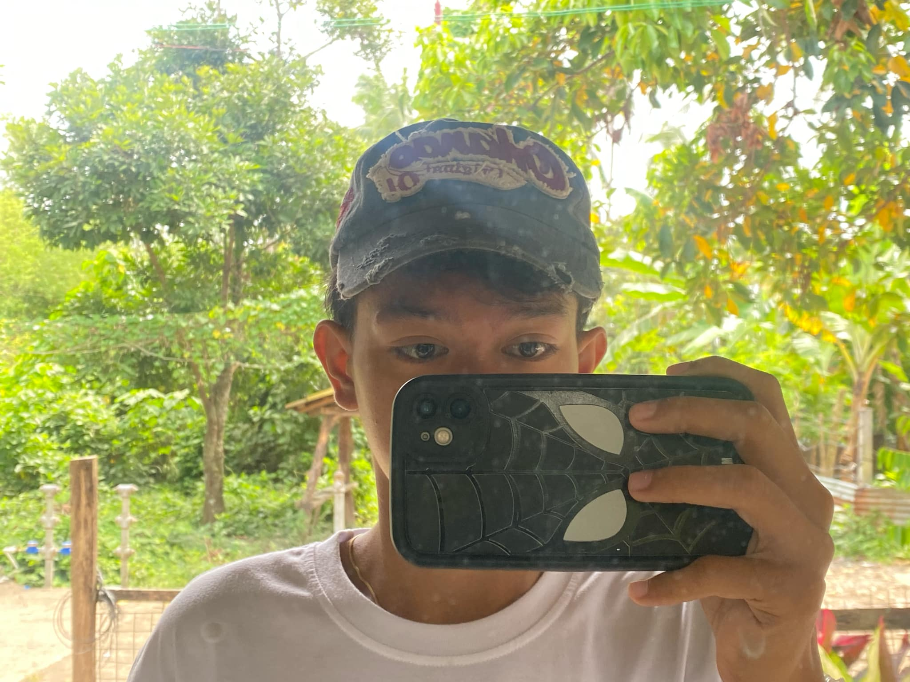

Hii, ako nga pala si Marcos Joaquin B. Villareal, isang ICT student na nangangarap maging isang malupet na mekaniko. hindi related diba? ewan ko din bat ako nag ict pero na e enjoy ko naman mag code also mahilig akong matulog, basketball, kumain and mag explore ng mga bagong bagay habang naka focus sa pansariling improvement :p.
Mahilig mangadyonang niyog.
Kayang matulog 24/7.
Problemadong Kupa.